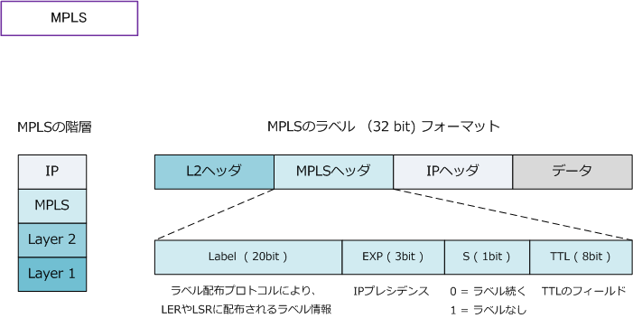
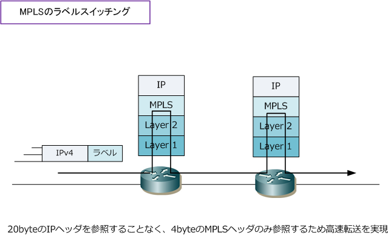
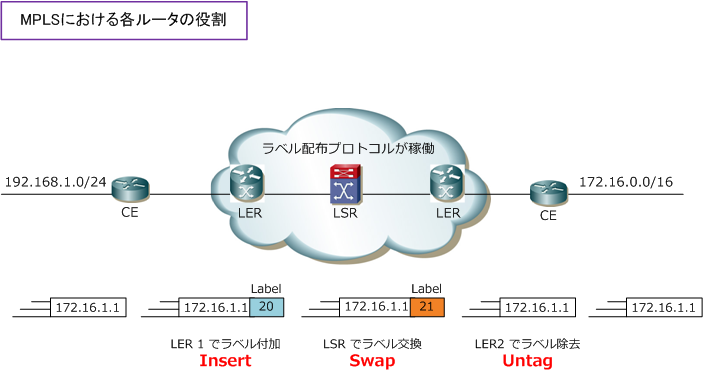
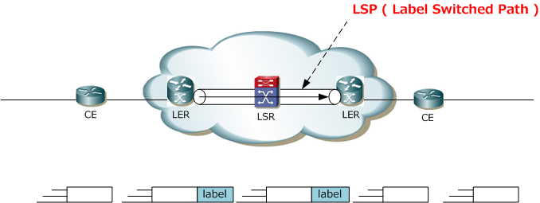

MPLS
MPLSとは
MPLS（ Multi-Protocol Label Switching ）は、ラベルと呼ばれるタグを使用したパケット転送技術です。 MPLSではIPv4、IPv6、IPXなど様々なプロトコルに対応したラベルを付加しデータをスイッチングできます。 MPLSはIP-VPNと呼ばれるキャリアのWANサービスで使用されていることで有名です。なお、IP-VPNでは レイヤ3のIPv4パケットをラベル付けし網内でラベルスイッチングしていることから、IPv4しか使えません。

※ ラベルの付加方法にはフレームモード（パケットモード）とセルモードの2種類がありますが、上図はフレームモードが前提。
MPLSでは、20byteのIPヘッダを参照したIPルーティングではなくて、4byteのMPLSヘッダのみを参照した ラベルスイッチングが行われるため、IPルーティングよりルータの処理を軽減した高速転送を実現しています。

ただしルータの処理能力が格段に向上した今日では、MPLSは高速転送を目的として使用されるのではなく ラベル付けを行うことでネットワークに色々な付加サービスを提供する目的として利用しているのが現状。 IP-VPNのWANサービスのように、顧客ごとのネットワークを識別するためのラベル付けはMPLS-VPNの 技術であり、その他のメジャーなMPLS技術には MPLS QoS、MPLS Traffic Engineering などがあります。
| MPLSの技術 | 説明 |
|---|---|
| MPLS-VPN | サービスプロバイダーにより提供されるMPLSを使用したVPNサービス |
| MPLS-QoS | MPLSネットワーク内のさまざまなタイプのトラフィックに対するQoSサービス |
| MPLS-Traffic Engineering | MPLSネットワークのトラフィック状況から判断して、ネットワーク構成を最適化する技術 |
※ 本コンテンツ「MPLSをはじめから」では、実務で役立つだけでなくCCIE試験範囲のMPLS-VPNに重点を置いて解説します。
MPLSにおける各ルータの役割 & 用語説明
下図の構成でMPLSを稼働させるルータはLERとLSRです。CEは顧客ルータで、MPLSは有効にしません。 LERはエッジLSRとも呼ばれます。受信したIPパケットにラベルを付加する方をIngress LERと呼びます。 受信したラベル付きパケットからラベル除去する方をEgress LERと呼びます。具体的に見てみましょう。
172.16.0.0/16 宛のパケット転送で、左側のLERがIngress LER、右側のLERがEgress LERとなります。 例えば逆向きの通信フロー（ 192.168.1.0/24 宛のパケット転送 ）であれば、呼ばれ方が逆になります。

| MPLS用語 | 説明 |
|---|---|
| LER | Label Edge Router。MPLS網のエッジに配置される企業ネットワークのルータと接続する キャリアのルータ。パケットのラベルの取り付け、取り外しを行う。PEルータとも呼ばれる。 |
| LSR | Label Switching Router。ラベル付けされたパケットを受信して、ラベルテーブルに従って ラベルの付け替えを行い転送していく。Pルータとも呼ばれる。※ P = Provider の意味。 |
| CE | Customer Edge。顧客側のルータ。顧客側の出口となるルータ |
| PE | Provider Edge。プロバイダ側のルータ。プロバイダ側の入り口となるルータ |
| ラベル配布プロトコル | ラベルの情報に関して広報するためのプロトコル。ラベルテーブルは、このラベル配布 プロトコルにより作成される。LDP、MP-BGPなどがラベル配布プロトコルとして使用される。 |
| FEC | Forwarding Equivalence Class。MPLS網で同じ宛先のパケットや同じ扱いをさせるパケットの集まり。 QoSや宛先IPアドレス等で分類することで効率的な伝送が可能になる。 |
| LSP | Label Switched Path。ラベルが付与されたパケットが辿る経路。 |

MPLSによるパケット転送までのステップ
MPLSでは、大きく次の3ステップによりラベルスイッチングを行い、パケット転送を実現しています。
| Step | 各ステップの内容 | 詳細説明 |
|---|---|---|
| 1 | FECに対するラベルの割り当て | FEC (Forwading Equivalence Class) にラベルを割り当てる。FECとは次のような パケットフロー経路のこと。例として10.1.1.0/24のルーティングエントリがFEC。 ・ 宛先IPアドレス ・ マルチキャストグループアドレス ・ IPヘッダのToS値 |
| 2 | ラベルプロトコルによる ラベル情報の交換 |
ラベルプロトコルには以下のプロトコルがある。MPLS-VPNで使用するプロトコル はLDPとMP-BGPとなる。RSVPは、MPLS-Traffic Engineeringなどで使用される。 ・ LDP ( Label Distribution Protocol ) ・ TDP ( Tag Distribution Protocol ) ・ RSVP ( Resource reservation Protocol ) ・ MP-BGP ( Multi-Protocol Border Gateway Protocol ) |
| 3 | ラベル情報に基づいたパケット転送 | ラベル情報 ( 16 ～ 1048575 のラベル値 ) に基づいてパケットを転送 |
MPLSにおけるラベル値について
最後に、MPLSのラベル値について簡単に説明します。MPLSではラベル配布プロトコルの配布という言葉が キーワードとなります。例えば、スイッチの場合はローカルにタグ付けの設定を行いますが、そのタグ付け の設定値が相手に伝わることはありません。一方、MPLSでは、ローカルで割り当てられたラベル値が隣接の MPLSルータに伝わります。下図ではLER2が172.16.0.0/16というFECに対し、ラベル値 [ 21 ] を割り当てて います。そのラベル値は隣接のLSRに [ 21 ] として伝わります。次にLSRは172.16.0.0/16にラベル値 [ 20 ] をローカル上で割り当て、その値 [ 20 ] を隣接ルータ (ここではLER1) に伝えます。詳細は別途説明します。

ローカルでのラベル値の割り当て、隣接ルータのラベル値の配布はラベル配布プロトコルが自動的に行います。
以上がMPLSの概要ですが、現時点で完全に理解 できていなくて問題ありません。なぜならMPLSは LDP、MP-BGP、VRF、MPLS-VPNを理解し初めて 点と点の情報が線になるような技術だからです。
別ページで解説するLDP、MP-BGP、MPLS-VPN、 VRFの解説を詳細に行いますのでそれらを読めば 全てがクリアーになると思います。
今回のページでは理解のしやすさに重点を置いて いるので技術解説を省略している部分もありますが それは別ページで最終的には全て解説しています。 細かい点でいえば、Insert、Swap、Untag以外に Removeもありますがそれを含め詳細に解説します。